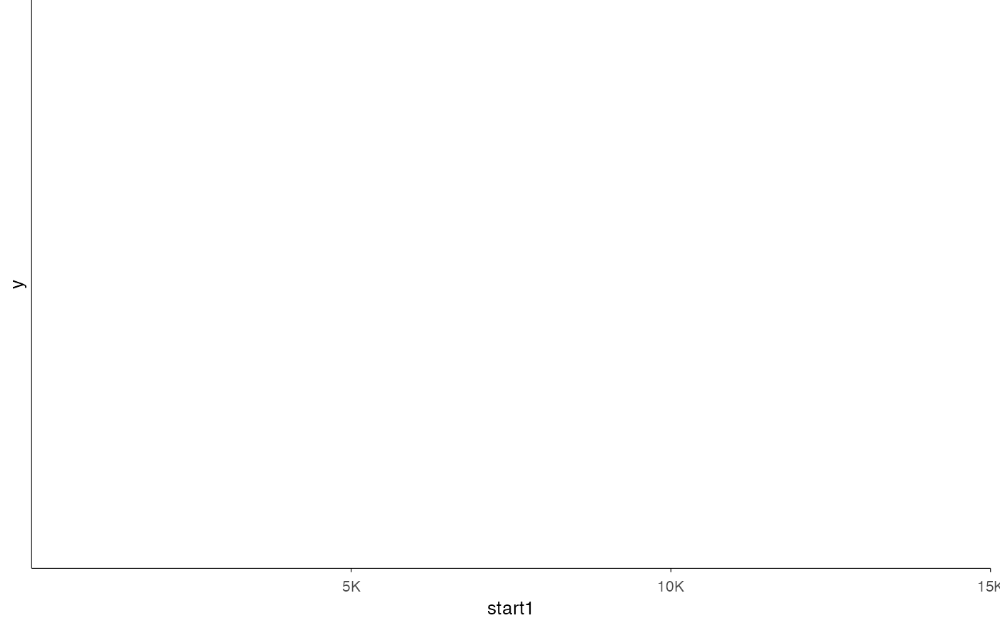
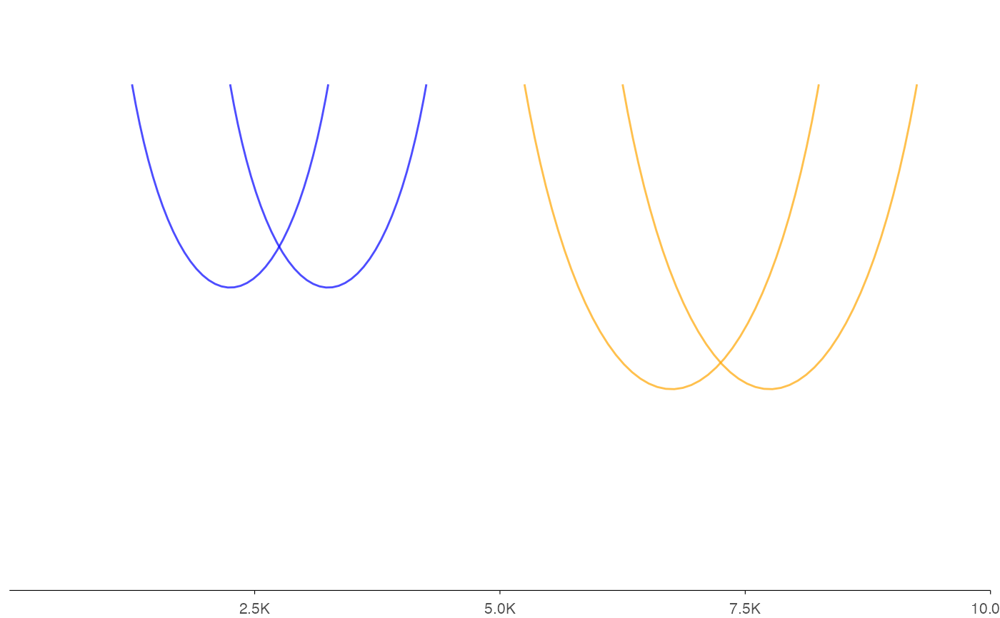

This function creates an interaction track visualization from various input types.
It provides a flexible interface with support for grouping and multiple tracks,
similar to ez_coverage.
Usage
ez_link(
input,
region = NULL,
gene = NULL,
gene_db = NULL,
org_db = NULL,
extend = 0.1,
extend_type = c("proportion", "bp"),
track_labels = NULL,
group_var = NULL,
color_by = c("group", "track"),
colors = "gray50",
curvature = 0.5,
height_factor = 0.15,
direction = c("down", "up"),
size = 0.5,
alpha = 0.7,
use_score = FALSE,
facet_label_position = c("top", "left"),
border = FALSE,
show_legend = FALSE,
label_chr = TRUE,
...
)Arguments
- input
A GRanges, GInteractions, data frame, character vector of file paths, or named list of data sources with interaction data.
- region
Genomic region to display (e.g., "chr1:1000000-2000000"). Either
regionorgene(withgene_db) must be provided.- gene
Gene name/symbol to look up (e.g., "PTPRC", "TP53"). When provided, the region is automatically determined from the gene coordinates in
gene_db. Eitherregionorgenemust be provided.- gene_db
TxDb object for gene coordinate lookup when using
geneparameter.- org_db
Optional OrgDb object for gene symbol mapping. If NULL (default), auto-detects available OrgDb packages.
- extend
Numeric. Amount to extend the region beyond the gene body when using
geneparameter. Default: 0.1 (10% of gene length on each side).- extend_type
How to interpret
extend: "proportion" (relative to gene length) or "bp" (absolute base pairs). Default: "proportion".- track_labels
Optional vector of track labels (used for character vector input)
- group_var
Column name for grouping data within a single data frame (default: NULL)
- color_by
Whether colors distinguish "group" or "track" (default: "group")
- colors
Color(s) for the arcs. Can be a single color (e.g., "gray50") or a vector of colors for multiple tracks/groups (e.g., c("blue", "orange", "green")). If fewer colors than tracks/groups are provided, colors will be recycled. Default is "gray50".
- curvature
Numeric value controlling the arc curvature (0-1). Higher values create more pronounced curves. Default: 0.5
- height_factor
Height of curves as proportion of genomic distance span. Higher values create taller arcs. Default: 0.15
- direction
Direction of curve arcs: "down" (negative y, default) or "up" (positive y). Default: "down"
- size
Line width of the arcs. Default: 0.5
- alpha
Transparency level of the arcs (0 = transparent, 1 = opaque). Default: 0.7
- use_score
Logical indicating whether to use the 'score' column for arc coloring. If TRUE, a color gradient will be applied based on the interaction scores. Default: FALSE
- facet_label_position
Position of facet labels: "top" or "left" (default: "top")
- border
Logical. If
TRUE, adds a black border around the plotting panel (default: FALSE)- show_legend
Logical. If
TRUE, displays the legend (default: FALSE)- label_chr
Logical. If
TRUE(default), labels the x-axis with the chromosome name (e.g., "Chr1"). Set toFALSEto suppress the x-axis label.- ...
Additional arguments passed to
geom_link()
Details
The function automatically handles different input types:
For BEDPE files: Reads and processes the interaction data
For data frames: Expects columns for interaction coordinates (start1, end1, start2, end2) and optionally a 'score' column if
use_score = TRUEFor named lists: Creates multiple faceted tracks
With group_var: Groups interactions within a single data frame for overlaid visualization
The visualization includes:
Arcs connecting interaction anchors
Optional score-based coloring
Support for grouping and faceting
Automatic scaling to fit the specified genomic region
Examples
# From a data frame with uniform coloring
data(example_interactions)
ez_link(
example_interactions,
"chr1:1-15000",
colors = "darkblue",
size = 1,
alpha = 0.8
)

# Single data frame with grouping
df <- data.frame(
start1 = c(1000, 2000, 5000, 6000),
end1 = c(1500, 2500, 5500, 6500),
start2 = c(3000, 4000, 8000, 9000),
end2 = c(3500, 4500, 8500, 9500),
sample = c("A", "A", "B", "B")
)
ez_link(df, "chr1:1-10000", group_var = "sample", colors = c("blue", "orange"))
